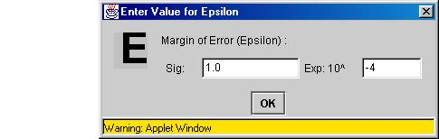

Applet User's Manual
File MenuThe File menu provides the user with a way to clear the current screen. It also allows the user to exit the applet.
Clicking on the Clear item removes any loci and particles from the canvas. This allows the user to start over in a new field with no particles or loci. ExitSelecting the Exit menu item stops the execution of the applet and exits the applet. This can also be accomplished by clicking the X in the top right hand corner of the applet. Add MenuThe Add menu provides the user with a way to add particles to the canvas. The user can add both negatively and positively charged particles to the field. By using the Add menu, the user is able to specify the exact location of the particle in the field, along with the radius and the charge of the particle. 
Adding ParticlesSelecting the Positive or Negative Particle item under the Add menu brings up a dialog to configure a particle's charge, radius, and position. Clicking the Positive or Negative Particle option under the menu brings up an option dialog (see below) with a default charge of positive or negative, respectively. Selecting OK on the dialog places the particle with the entered attributes (radius and charge) at the entered position. If a positive particle is selected and a negative charge is given then the colors of the particle will change to the negative default color, and vice versa. Also, any loci already existing are recomputed and redrawn, taking into account the particle addition. Closing the window simply does not add the given particle to the field. See Also Toolbar -- Add Particle Compute MenuThe Compute menu provides the user with a way to find the potential at a given point or find a point with a given potential. It also has options for finding a locus of points with the same potential and displaying information about an equipotential surface and the points it contains. If no particles are placed on the field, then the potential at a point, the point with a given potential, and the equipotential surfaces cannot be found. An error message will appear. 
Finding Equipotential SurfacesSelecting the Locus item from the Compute menu brings up a dialog that allows the user to specify the point at which to find the equipotential surface. After entering in the desired location for the locus to be found, clicking OK causes a locus with the same potential as the given initial point (point entered) to be computed and drawn. Closing the window brings the user back to the main applet window without finding the locus. See Also Toolbar -- Finding Equipotential Surfaces Finding a Point With a Given PotentialSelecting the Point option brings up a dialog (below on the left) to enter in the potential the user wishes to find. It also has a place to specify where to start searching for a point with the given potential. Selecting OK begins the search. If a point with the entered potential is found, allowing a margin of error (Epsilon), then a label for the point and a label for the potential are drawn on the canvas. If no point is found with the given potential in the area specified, a response dialog (below on the right) pops up asking the user if he wishes to perform another search. Selecting YES brings up the previous dialog (below on the left). Clicking NO or closing the window returns the user to the main applet window. 
Finding the Potential at a PointSelecting the Potential option brings up a dialog (below) to enter the point at which the user wants the potential to be found. If OK is selected, then the potential at the entered point is found, and a label for the point and a label for the potential are drawn on the canvas. If the window is closed, then the user returns to the main applet window with no potential being found at the specified point. 
See Also Toolbar -- Finding Potential at a Point Viewing Points of Equipontential Surface (Display Locus Points)Clicking on the Display Locus option allows the user to display information about a locus and the point contained in the equipotential surface. After selecting this option, the user simply clicks the initial point of the locus to be displayed--click to the left of the point label of the locus (see below for example). Locus information includes the number of points, the potential of the points, and the initial point found with the specified potential. See below for an example of the locus display. Options MenuThe Options menu allows the user to change characteristics of the applet. The user is able to change the colors of the particles and equipotential surfaces. The ability to set the window (field) to any desired width or height is also given to the user. The user is able to turn the axis on or off (make the axis visible or invisible) and set the color of the axis. The ability to control the margin of error (Epsilon) used in finding a point with a given potential is also found in the Options menu. 
Changing the Color of Equipotential Surfaces (Change Locus Color)Selecting the Surface Color item from the Options menu brings up a color selection dialog (see below) that allows the user to chose the color for the equipotential surfaces. After selecting the desired color, clicking APPLY sets the color of all the created loci to the new locus color. All surfaces created after this change will have the chosen color. Closing the dialog allows the loci to retain their current color, and the user is returned to the main applet window. 
Changing the Color of ParticlesSelecting the Negative Color or Positive Color item from the Options menu brings up a color selection dialog that allows the user to choose the primary and secondary colors for negative or positive particles, respectively. After selecting the color for the positive or negative particle, clicking OK makes any new particles added to the field (canvas) have the colors selected. Selecting APPLY sets the colors of all particles with the default colors (Blue and Yellow for positive particles and Red and Orange for negative particles until changed by the color choice) to the new color values. Also any other particles added to the field will have the chosen colors. Closing the window simply retains the defaults for the positive or negative particles and any existing particles keep their current colors. An example of the positive particle color dialog is shown below. 
See Also Particle Menu -- Changing a Particle's Color Changing the Size of the FieldSelecting the Field Width or Field Height option from the Options menu allows the user to specify the width or height of the field (or canvas window), respectively. After entering the new maximum and minimum value in the dialog box (see below) for the field width or height, selecting OK applies the new dimensions to the field (or window). Closing the dialog allows the field to keep its current width and height dimensions. It is important to note that a change in the height causes a change in the width, and similarly a change in the width causes a change in the height. This is so the width and height of the field coordinates stay in the same ratio as the width and height of the canvas. The axis, particles, and loci move in accordance with the change in dimensions of the field. See Also Key Functions -- Zooming In and Zooming Out Configure X-Y AxisClicking on the Axis item in the Options menu (see below) allows the user to turn the axis off or on and to change the color of the axis. Turning the axis off makes the axis invisible to the user. Turning the axis on shows an x-y axis with the specified color. After selecting the color of the axis, clicking OK changes the color of the axis to the chosen color (if the axis is turned on). If the options dialog is closed, then the axis retains its properties. Increasing or Decreasing EpsilonSelecting the Epsilon item from the Options menu lets the user control the margin of error allowed when searching for a point with a given potential. A dialog box (see below) asks the user for the new margin of error. After entering in the new value for Epsilon, selecting OK sets the new margin of error. Closing the dialog box without selecting OK does not change the value of Epsilon. The old value is kept. Help MenuThe Help menu provides an About item which displays a dialog giving some information about the applet. 
About the AppletSelecting the About item from the Help menu displays a dialog yielding some applet information. ToolbarThe Toolbar gives the user buttons to add a positive or negative particle, find a point with a given potential, compute the potential at a point, or find an equipotential surface. Adding ParticlesThe top two buttons of the Toolbar are used to add a positive or negative particle. The button to add a positive particle is shown below on the left, and the button to add a Negative particle is shown below in the middle. The user simply has to click the button and then click where on the field they would like the particle to be placed. A dialog box (below on right) then appears asking the user for the radius and charge of the particle. After the values are entered, if the OK option is selected, the particle with the given charge and radius is added at the point clicked on. If a positive particle is selected and a negative charge is given, then the colors of the particle will change to the negative default color, and vice versa. Also, any loci already existing are recomputed and redrawn with the particle addition. If the dialog box is closed, the particle is not added to the field, and the user is returned to the main applet window. 
See Also Add Menu -- Adding Particles Finding a Point With a Given PotentialThe button below is used to find a point with a given potential. An error message appears if there are no particles on the field when this button is selected.See Compute Menu for Details -- Find a Point With a Given Potential Finding Equipotential SurfacesSelecting the Locus button on the Toolbar allows the user to find an equipotential surface in the specified field. The user then clicks on the location where the desired locus is to be found. If there is a potential previously computed at that point, the locus is found around the existing point (see below). If this is not the case, a locus is found, and a label for the selected point is displayed with the potential for the locus. If a locus already exists with this point as its initial point (point displayed on canvas), then no locus will be computed. It is important to note that if there are no particles in the particle field, then the locus will not be computed. An error message will be displayed. See Also Compute Menu -- Finding Equipotential Surfaces Finding the Potential at a PointSelecting the Potential option allows the user to click on the point (or points) at which the potential is to be found. Clicking on any point on the field (or canvas) computes the potential at the point and draws this potential, along with the point selected, on the canvas. See Also Compute Menu -- Finding Potential at a Point Particle MenuThe Particle menu provides the user a way of changing characteristics of a particle. The popup menu (see below) comes up when the particle is right-clicked. The menu allows the user to move the particle, change its colors, change the radius or charge of a particle, or remove a particle from the canvas (or field). 
Changing the Location of a ParticleSelecting the Move option from the Particle popup menu brings up a dialog (see below) to change the location of the particle. The particle's current X and Y location are given in the dialog by default. Selecting OK after entering the new location of the particle moves it to the desired location. The existing loci are then recomputed and redrawn to account for the change in particle position. Closing the dialog leaves the particle at its current position. 
Changing the Charge of a ParticleThe charge of a particle can be changed by selecting the Charge option of the Particle menu. When this option is selected, an option dialog pops up (see below), displaying the particle's current charge. If the OK option is selected, the particle's charge is changed to the charge entered by the user. If the particle is using the default colors for a positive particle and this charge is changed to a negative charge, then the colors of the particle are changed to the default negative particle colors, and vice versa. The existing loci are then recomputed to reflect the change in the particle's charge. Closing the options dialog returns the user to the main applet window without changing the charge of the particle. 
Changing the Size of a ParticleSelecting the Radius option from the popup menu allows the the user to change the size of the particle. An option dialog (see below) is displayed with the particle's current radius. After entering in the new radius for the particle, selecting OK changes the radius (size) of the particle. If the dialog is closed, then the particle retains its original radius. 
Changing a Particle's ColorsSelecting the Color option from the popup menu allows the user to change the colors of a particular particle without changing any of the defaults for a positive or negative particle. A dialog is displayed which allows the user to select the colors of the particle. Clicking OK in the dialog will change the colors of the particle to the selected colors. Closing the dialog does not change the particle's colors; the original values are retained. 
See Also Options Menu -- Changing the Color of Particles Removing a Particle from a FieldThe Remove option allows the user to remove the selected particle (the particle for which the popup menu is shown on the field). Selecting this option removes the particle from the canvas, and the existing loci are recomputed to reflect the change in the field. If there is only one particle on a canvas and this particle is removed, then all loci are also removed from the canvas. (Loci cannot be computed or drawn in a field with no particles.) Key FunctionsThe plus (+) and minus (-) keys allow the user to quickly resize the field. The plus key (+) zooms in and the minus key (-) zooms out. The zoom in and zoom out functionality are used to resize the field in small increments. Whenever a significant change to the width or height of the field is desired, the Field Width or Field Height option should be used. Zooming InThe plus key (+) allows the user to zoom in on the field; it decreases the viewable dimensions of the field. See Also Options Menu -- Changing the Size of the Field Zooming OutThe minus key (-) allows the user to zoom out; it increases the viewable dimensions of the field. See Also Options Menu -- Changing the Size of the Field Status BarThe Status bar (see below) on the bottom left-hand corner of the applet relays the status of the applet to the user; it tells the user what action is currently taking place (adding a particle, finding a locus, recomputing the existing loci, etc.). 
Point ViewA textbox on the bottom right hand corner of the applet (see below) displays the location of the mouse cursor in the given field. The location is shown as a point (x,y). 
|